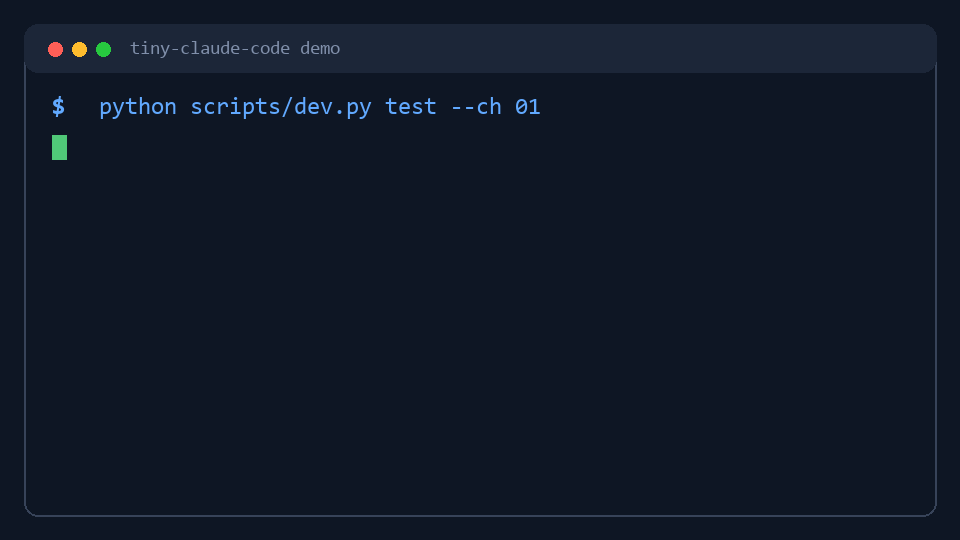

Build a Claude Code-style coding agent from scratch.
A 15-chapter Python tutorial for learning the agent loop, tool calling, shell access, file tools, permissions, hooks, memory, subagents, background jobs, and plugins.

What you will learn
Agent loop
Turn messages, model responses, tool calls, and observations into a persistent coding agent harness.
Tool calling
Expose shell and file tools through schemas while keeping local execution in Python handlers.
Runtime systems
Add permissions, hooks, context compaction, sessions, memory, todos, subagents, and plugins.
Quick start
git clone git@github.com:Loveca/tiny-claude-code.git
cd tiny-claude-code
pip install -r requirements.txt
python scripts/dev.py test --ch 01
python scripts/dev.py run --refCurriculum
ch01Agent loop and CLI
ch02Shell tool
ch03File tools
ch04Tool registry
ch05Permissions
ch06Hooks
ch07Error recovery
ch08Context budget
ch09Compact
ch10Session and memory
ch11Todos and tasks
ch12Subagents
ch13Background and cron
ch14Real project challenge
ch15Skills and plugins